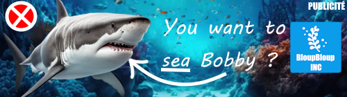

Vers ses 20 ans, Jean Babou investit massivement dans les cryptomonnaies, accumulant une fortune colossale qui le propulse parmi les grands noms de la finance mondiale.
Fort de cette richesse, il diversifie ses placements dans de nombreux secteurs, devenant l'un des investisseurs les plus influents de sa génération.
C'est dans ce contexte qu'il rencontre le jeune entrepreneur Gabriel Frouard en 2029 et décide de l'aider à fonder SkyMotors Company en tant qu'investisseur principal.
Jean Babou a toujours décrit ce partenariat comme l'une des meilleures décisions de sa vie.
Durant l'année 2038, Jean Babou est officiellement classé comme l'homme le plus riche de la planète, grâce à la combinaison de ses investissements en cryptomonnaie, ses parts dans SkyMotors Company et ses nombreuses participations dans d'autres secteurs. Cette consécration internationale fait de lui une figure incontournable de la scène économique mondiale.
En 2039, Jean Babou tente de rejoindre la commission du Conseil de la Vérité, mais ne parvient pas à être élu parmis ses membres.
En Juin 2045, Jean Babou annonce sa candidature aux futures élections françaises de 2047. Les sondages le donnent largement favori avec 75% des intentions de vote. Sa fortune et son image de self-made man lui confèrent une popularité considérable, et son programme économique est salué par de nombreux observateurs.
Jean est marié depuis plus de 20 ans avec sa femme, Léona Babou.
Avec qui il a eu Nestor Babou, directeur fondateur de l'aquarium BloupBloup Inc. à Columbus.
Jean Babou est également récemment devenu grand-père d'Archibald Babou.
